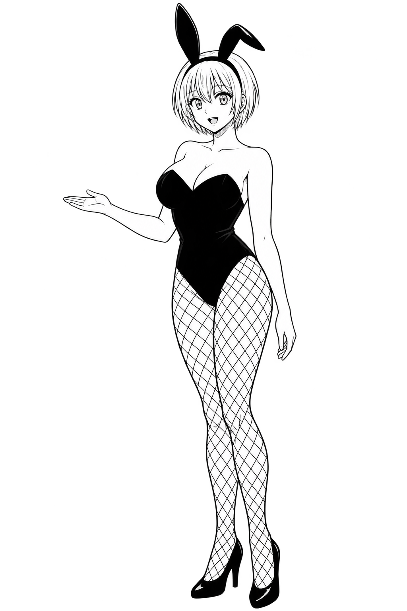
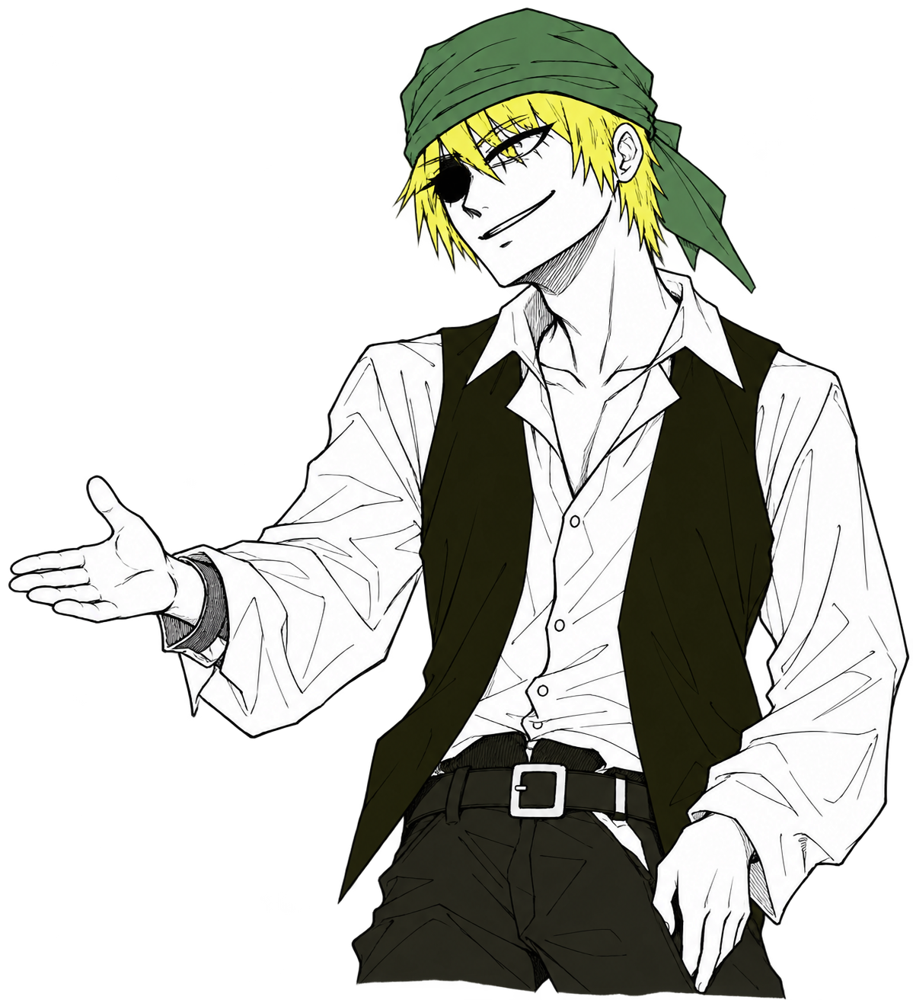

樽あみだくじ
第 1 局
あなた 0点
対
0点 CPU

海賊との第二戦樽に道を仕掛け、伏せられた道を進め。

横棒を仕掛ける
自分の盤面をクリック。横棒は対戦全体で20本まで追加できます。
あなた：残り 20本（使用 0）CPU：残り 20本（使用 0）
あなたのあみだ海賊のあみだ

海賊との第二戦樽に道を仕掛け、伏せられた道を進め。

自分の盤面をクリック。横棒は対戦全体で20本まで追加できます。